Behind you throughout the journey, pushing forward
Contact
An elite, boutique public relations agency. As strong public relation professionals, we pride ourselves in putting clients first.
- Public Relations
- Strategic Communications
- Media Relations
- Partnership Development and Outreach
Sand Hill Public Relations (2026)